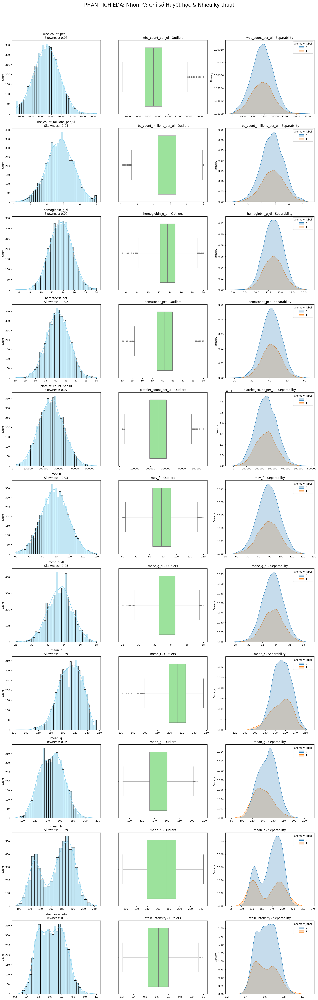

1. Nhóm A: Hình thái & Bệnh lý (Tín hiệu Vàng)
-
Đặc trưng phân phối:
-
Phân tách (Separability): Rất tốt. Nhãn 0 và 1 có
vùng phân phối tách biệt rõ rệt (đặc biệt là
eccentricity và lobularity_score).
-
Hình dạng: Lệch nặng (Skewed), xuất hiện dải
Outliers dài và dày đặc trong Boxplot.
-
Kết luận hướng xử lý:
-
Outlier: Giữ lại toàn bộ. Đây là
các mẫu bệnh lý đặc trưng. Áp dụng
Capping (Winsorization) ở phân vị 1% và 99% để
"nén" các giá trị cực trị, tránh làm nhiễu các mô hình
tuyến tính (Logistic, SVM).
-
Biến đổi: Sử dụng
Power Transformer (Yeo-Johnson) để đưa về phân phối
chuẩn cho các mô hình Bayes và MLP.
-
Scaling: Bắt buộc dùng
RobustScaler (tính toán dựa trên Median và IQR)
thay vì StandardScaler để bảo vệ các đặc tính của Outliers.

2. Nhóm B: Đặc điểm Hình thái học (Đa đỉnh)
-
Đặc trưng phân phối:
-
Phân tách: Trung bình. Có sự chồng lấp giữa hai
nhãn, cần kết hợp nhiều biến mới có thể phân loại tốt.
-
Hình dạng: Đa đỉnh (Multi-modal), cho thấy sự hiện
diện của nhiều quần thể tế bào khác nhau. Skewness vừa phải.
-
Kết luận hướng xử lý:
-
Outlier: Xử lý bằng Capping hoặc
giữ nguyên (nếu dùng các mô hình họ Cây như XGBoost).
-
Biến đổi: Có thể giữ nguyên phân phối đa đỉnh hoặc
dùng QuantileTransformer nếu bạn muốn đưa về phân
phối đều (Uniform) hoặc chuẩn để mô hình dễ hội tụ hơn.
-
Scaling: StandardScaler (Z-score).

3. Nhóm C: Chỉ số Huyết học & Nhiễu kỹ thuật
-
Đặc trưng phân phối:
-
Phân tách: Rất kém. KDE chồng khít hoàn toàn, không
có khả năng phân loại nhãn ở cấp độ tế bào.
-
Hình dạng: Đối xứng, gần với phân phối Gauss
(chuẩn). Outliers thưa thớt và rời rạc.
-
Kết luận hướng xử lý:
-
Outlier: Xóa bỏ (Trimming) các mẫu
nằm ngoài ngưỡng $1.5 \times IQR$. Đây chủ yếu là lỗi đo đạc hoặc
nhiễu thiết bị.
-
Scaling: Min-Max Scaler hoặc
StandardScaler.
-
Lưu ý: Nếu tài nguyên tính toán hạn chế, có thể xem
xét loại bỏ bớt các biến này (Feature Selection) vì chúng đóng góp
rất ít vào độ chính xác của mô hình phân loại tế bào.

4. Nhóm D: Điểm tin cậy & Thuật toán
-
Đặc trưng phân phối:
-
Phân tách:
anomaly_score tách biệt
100% (Dấu hiệu của rò rỉ dữ liệu). confidence lệch trái
(người dán nhãn tự tin vào các mẫu bình thường hơn).
-
Kết luận hướng xử lý:
-
Loại bỏ:
Drop cột
cytodiffusion_anomaly_score
để tránh mô hình bị "học vẹt" kết quả của thuật toán cũ.
-
Lọc dữ liệu: Sử dụng
labeller_confidence_score để lọc bỏ (Drop) các hàng có
độ tin cậy thấp (< 0.5) trong tập huấn luyện để đảm bảo mô hình
học từ dữ liệu chuẩn.

Bảng tóm tắt thực thi nhanh
| Thành phần xử lý |
Nhóm A (Vàng) |
Nhóm B (Hình thái) |
Nhóm C (Nhiễu/Huyết học) |
| Xử lý Outlier |
Capping (Giữ lại) |
Capping |
Trimming (Xóa) |
| Biến đổi Skew |
Yeo-Johnson |
Yeo-Johnson |
Không cần |
| Phương pháp Scaling |
RobustScaler |
StandardScaler |
StandardScaler |
| Tầm quan trọng |
Rất cao |
Cao |
Thấp |
Xử lý nhãn mục tiêu (anomaly_label)
Vì Skewness nhãn là 0.77, tập dữ liệu của bạn đang bị lệch
(Imbalanced).
-
Chiến lược: Sử dụng
Stratified Shuffle Split khi chia tập Train/Test để đảm
bảo tỷ lệ nhãn bất thường đồng đều ở cả hai tập.
Chi tiết xử lý
Phân công